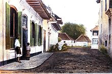
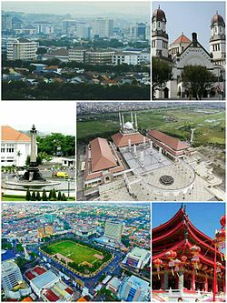
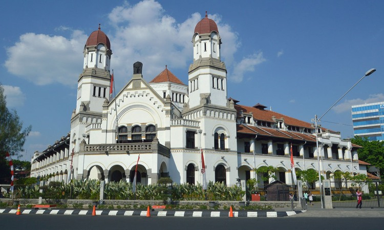
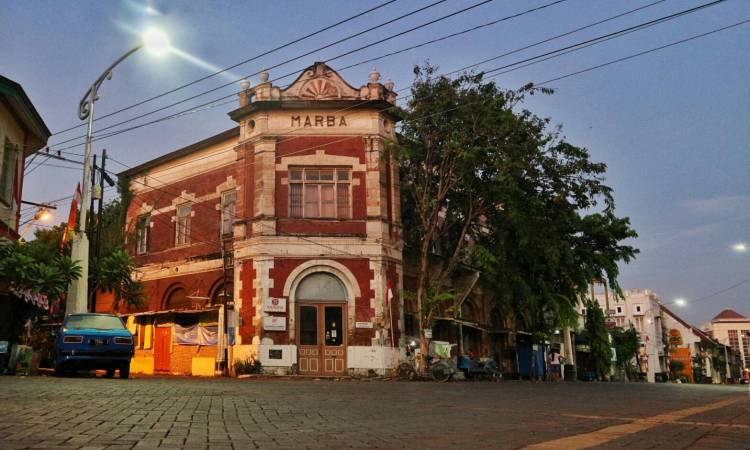

Sejarah

Sejarah Semarang berawal kurang lebih pada abad ke-6 M, yaitu daerah pesisir yang bernama Pragota (sekarang menjadi Bergota) dan merupakan bagian dari kerajaan Mataram Kuno. Daerah tersebut pada masa itu merupakan pelabuhan dan di depannya terdapat gugusan pulau-pulau kecil. Akibat pengendapan, yang hingga sekarang masih terus berlangsung, gugusan tersebut sekarang menyatu membentuk daratan. Bagian kota Semarang Bawah yang dikenal sekarang ini dengan demikian dahulu merupakan laut. Pelabuhan tersebut diperkirakan berada di daerah Pasar Bulu sekarang dan memanjang masuk ke Pelabuhan Simongan, tempat armada Laksamana Cheng Ho bersandar pada tahun 1435 M. Di tempat pendaratannya, Laksamana Cheng Ho mendirikan kelenteng dan masjid yang sampai sekarang masih dikunjungi dan disebut Kelenteng Sam Po Kong (Gedung Batu).
Pada akhir abad ke-15 M ada seseorang ditempatkan oleh Kerajaan Demak, dikenal sebagai Pangeran Made Pandan (Sunan Pandanaran I), untuk menyebarkan agama Islam dari perbukitan Bergota. Dari waktu ke waktu daerah itu semakin subur, dari sela-sela kesuburan itu tumbuhlah pohon asam yang berjarak antara satu sama lain (jarang - jarang) (bahasa Jawa: asem arang), sehingga memberikan gelar atau nama daerah itu yang kemudian menjadi Semarang.
Geografis

Kota Semarang adalah salah satu kota penting yang terletak di pesisir utara Jawa dan sebagai hub utama penghubung Jakarta - Surabaya dan kota - kota di pedalaman selatan Jawa (Surakarta dan Yogyakarta). Kota Semarang memiliki ketinggian dari 2 meter bawah permukaan laut hingga 340 meter diatas permukaan laut dengan kemiringan lereng 0% - 45%. Kota Semarang merupakan kota yang memiliki kondisi topografi yang unik berupa wilayah dataran rendah yang sempit dan wilayah perbukitan yang memanjang dari sisi barat hingga sisi timur Kota Semarang. Wilayah dataran rendah di Kota Semarang sangat sempit.
Wilayah dataran rendah pada wilayah barat Kota Semarang hanya memiliki lebar 4 kilometer dari garis pantai, sedangkan pada wilayah timur Kota Semarang wilayah dataran rendah semakin melebar hingga 11 kilometer dari garis pantai. Wilayah dataran rendah ini merupakan dataran banjir dari sungai - sungai besar yang mengalir di Kota Semarang, seperti Kali Garang (Banjir Kanal Barat), Kali Pengkol, dan Kali Bringin. Wilayah dataran rendah ini membentang di sisi utara Kota Semarang dan hampir mencakup 40% total wilayah Kota Semarang. Wilayah dataran rendah ini dikenal sebagai kota bawah (Semarang Ngisor), sekaligus sebagai pusat aktivitas perekonomian kota. Dengan kondisi demikian, wilayah kota bawah sering kali dilanda banjir tahunan dan puncaknya ketika musim penghujan. Sejumlah wilayah khususnya Semarang Utara, banjir ini kadang juga disebabkan luapan air pasang laut (banjir rob). Wilayah perbukitan di Kota Semarang ini membentang di sisi selatan. Perbukitan ini merupakan bagian dari rangkaian formasi pegunungan utara Jawa yang membentang dari Banten hingga Jawa Timur. Wilayah perbukitan di Kota Semarang dikenal sebagai kota atas (Semarang Dhuwur). Wilayah perbukitan ini juga merupakan kawasan hulu dari sungai - sungai besar yang mengalir di Kota Semarang. Wilayah kota atas juga bagian dari bentang kaki gunung api Ungaran, yang terletak pada sisi selatan Kota Semarang.
Wisata
Semarang merupakan ibukota Provinsi Jawa Tengah dan menduduki peringkat atas yang sering dikunjungi oleh wisatawan. Alasan utamanya kota ini memiliki tempat wisata yang menarik dengan destinasi keindahannya. Tak hanya wisata alam saja tetapi juga ada banyak objek wisata yang bertemakan sejarah. Selain itu kota yang satu ini juga memiliki segudang tempat wisata yang bisa Anda kunjungi untuk menghabiskan liburan bersama keluarga ataupun sahabat.
Lawang Sewu

Gedung era kolonial ini lebih identik menjadi salah satu tempat wisata misteri. Mengingat gaya dari bangunan tersebut masih memiliki gaya kolonial dan masih bertahan sampai saat ini. Akan tetapi diluar dari semua cerita tersebut gedung ini memiliki gaya dan arsitektur yang menarik yang bisa Anda kunjungi.
Kota Lama

Kota Semarang menjadi saksi bisu sejarah panjang mengenai kisah dari bangsa Indonesia. Hal ini bisa Anda dapati dengan banyaknya bangunan-bangunan megah dan memiliki arsiektur khas era kolonial. Tempat ini sering kali di jadikan untuk mengambil gambar syuting untuk beberapa film yang sudah di kenal.